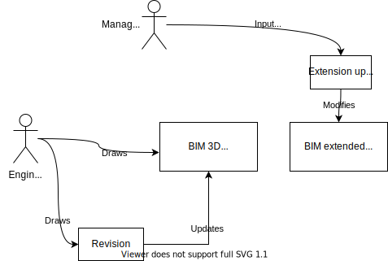

Evolving Plan
Relations from Other Scenarios
- Actor Management ← actors ← Evolving Plan
- Scheduling ← task shadows ← Evolving Plan
Relations to Other Scenarios
- Evolving Plan → BIM → Virtual Inspection
Summary🔗
This scenario examines how the BIM plans evolve over time.
This scenario does not talk about the updates based on the observed data (such as images, point clouds and voxel clouds).
It is about the updates of the federated BIM model.
Models🔗
bim3d🔗
This BIM model is provided after the planning phaseplanning and updated throughout the constructionconstruction.
The plan is updated as the building grows.
This is the federated model of all the individual domain models.
We assume that the model excludes the time, schedule, the tasks, the costs, the actors etc.
It only includes the geometry (3D).
bim_extended🔗
This model extends bim3d by including additional entities which were not provided in the official plan.
These entities include:
- additional zones (e.g., for deliveries),
- actors,
- tasks,
- costs,
- ... and more.
These additional entities are linked to the entities in bim3d.
Definitions🔗
revision🔗
The revision is an official version of a bim3d at different stages of construction.construction
It happens maybe once a week per an important model.
These changes are official and they have to be signed-off (by a civil engineer, construction engineer etc.) and are legally binding.
extension update🔗
The entities of the bim_extended are changed internally by our system.
The updates are not officially binding and can happen arbitrary often (e.g., multiple times a day).
inconsistency🔗
An inconsistency is a dangling link between
non ifc entity🔗
Non-IFC entity is an entity of our system that can not be modeled as an IFC class.
The non-IFC entities are shadowed in bim_extended by IfcExternalReference.
Though IfcExternalReference is usually used for documents, we use it here in the sense of
REpresentational State Transfer (REST)
where everything is considered a "resource".
explorer🔗
The explorer allows us to view instances in bim3d and bim_extended in a browser.
This is a very low-level tool (not for visualizing 3D geometry!) and should not allow any modifications to the models as these are gate-kept by the system (and could break it).
site coordinate system🔗
This is the coordinate system of the building site.
All the elements from bim3d live in this coordinate system.
The unit is always a meter.
Scenario🔗
As-planned🔗
Plans.
The planning of a construction site consist of two models:
- an official plan bim3d (only 3D geometry, officially signed off), and
- an internal, extended plan bim_extended (changed more frequently, covering abstract entities such as tasks, actors, costs, more dynamic zones etc., not officially signed off).
The official bim3d is updated through revisions. As these revisions are costly and official, they are not frequently done.
The extension update of the internal bim_extended occurs much more frequently than the official revisions. For example, when a new delivery (from on-site_logistics) is inserted into the system.
Inconsistencies. On every revision, there might be inconsistency introduced between bim_extended and bim3d.
For example, during planning, we might refer to entities which have not been designed yetplanning.
An another example. An entity of bim3d is deleted in a revision because it should not be eventually built, but it is referred to by a task entity in bim_extended.construction
We consciously expect these two models to be actually inconsistent.
The system should provide an application to highlight the inconsistencies.
Globally unique identification. We expect entities in bim3d and bim_extended to have guids globally unique with the respect to their union. A guid in bim_extended should not conflict with a guid in bim3d, but mean the same entity.
For example, you should not give the same guid to a wall and to an organization.
Non-IFC entities. Our system supports many non-IFC entities (such as risk (from risk_management) and delivery update (from on-site_logistics)).
In order to make these entities referencable by IFC entities, every non ifc entity
needs to be shadowed in bim_extended as an IfcExternalReference.
Visualization of entities. The system should provide a viewer of the entities.
This viewer is not meant for visualization of 3D geometry, but for exploration of existing entities and their links to non-IFC entities. This viewer is more like a database viewer (kind of a "PhpMyAdmin" for BIM).
We might use a tool such as https://ifcwebserver.org/ (Section "Innovative Graph database data management"). In case we want to support the links to non ifc entities, we might need to implement an explorer on our own (e.g., using a simple viewer in a browser based on identifiers (from unique_resource_identification)).
Overview diagram. 
As-observed🔗
We adapt bim3d to as-built (from digital_reconstruction) in parallel to have a semantically interpretable representation of the physical world.
However, as-built (from digital_reconstruction) is not considered a "plan", but an "observation".
The remaining aspect sections intentionally left empty.
Test Cases🔗
inconsistent model🔗
We test the system with manually designed bim3d and bim_extended with inconsistencies introduced on purpose.
Acceptance Criteria🔗
inconsistencies dealt with gracefully🔗
The system needs to deal with the inconsistencies in a graceful manner. For example, dangling references should be checked and should not raise an exception or break down the system.